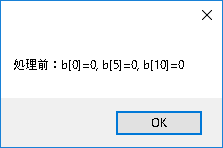
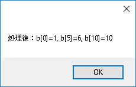

Visual Studio Community 2015を使います。Visual Studio C++ 2015 を使えるようにしてください（※1）。
C#でC++のmemcpy
C++のstring.hに定義されているmemcpyを利用するC++/CLIラッパーを作成します。C++のdllを作成しないので、プロジェクトの設定やプログラミングは簡単になります。
今回の一番のポイントは、マネージドな配列をマーシャリングする部分です。
サンプルソリューションをここに置いておきますので、参考にしてください（サンプルプログラムにおける警告について）。
手順
1. 準備
- C#プロジェクトの新規作成
- ファイル → 新規作成 → プロジェクト → Visual C# → Windows → Windowsフォームアプリケーション
- 例として名前は「test01」としてください
- 例として名前は「test01」としてください
- ファイル → 新規作成 → プロジェクト → Visual C# → Windows → Windowsフォームアプリケーション
- C++/CLI(CLR)プロジェクトの新規作成
- ソリューションエクスプローラーのソリューションを右クリック → 追加 → 新しいプロジェクト → Visual C++（※2） → CLR → クラスライブラリ
- 例として名前は「WrapperClass」としてください
- 例として名前は「WrapperClass」としてください
- ソリューションエクスプローラーのソリューションを右クリック → 追加 → 新しいプロジェクト → Visual C++（※2） → CLR → クラスライブラリ
- 依存関係の設定など
- ソリューションエクスプローラーのソリューションを右クリック→ プロジェクトの依存関係
- コンボボックスの「test01」を選択 → 「WrapperClass」にチェック
- ソリューションエクスプローラーの「test01」の参照を右クリック → 参照の追加 → プロジェクト → ソリューション
- 「WrapperClass」にチェック
- ビルド → 構成マネージャ
- すべてのプロジェクトにチェックがついていることを確認
- DebugとReleaseの両方を確認すること
- ソリューションエクスプローラーのソリューションを右クリック→ プロジェクトの依存関係
2. C++/CLI(CLR)ラッパークラスのコード
- WrapperClass.hの内容を、以下に置き換えます。
#pragma once
using namespace System;
namespace Wrapper
{
public ref class WrapperClass
{
public :
int MemCopy(array<int>^ src, array<int>^ dst, int size);
};
}- WrapperClass.cppの内容を、以下に置き換えます。
#include "stdafx.h"
#include "WrapperClass.h"
#include <string.h>
int Wrapper::WrapperClass::MemCopy(array<int>^ src, array<int>^ dst, int size)
{
// ★ここがポイント
// 実行中、ガベージコレクションされないように、pin_ptrを使って固定する
pin_ptr<int> srcPtr = &src[0];
pin_ptr<int> dstPtr = &dst[0];
// memcpy実行
memcpy(dstPtr, srcPtr, sizeof(int) * size);
// ★ここがポイント
// 固定解除
srcPtr = nullptr;
dstPtr = nullptr;
return 0;
}- ポイント
- マネージドな変数
array<int>^を、pin_ptrで固定して、
アンマネージドな変数を扱う関数（memcpy）にポインタを渡しています - 固定した後は、解除します（必須！）
- マネージドな変数
2. C#のコード
C#のForm1クラスで試します。Form1.csの内容を、以下に置き換えます。
using System;
using System.ComponentModel;
using System.Data;
using System.Drawing;
using System.Linq;
using System.Text;
using System.Windows.Forms;
using Wrapper;
namespace test01
{
public partial class Form1 : Form
{
WrapperClass _wr = new WrapperClass(); //WrapperClassのインスタンスを作成
public Form1()
{
InitializeComponent();
int[] a = {1, 2, 3, 4, 5, 6, 7, 8, 9, 10};
int[] b = new int[10];
MessageBox.Show("処理前：b[0]=" + b[0].ToString() +
", b[5]=" + b[5].ToString() +
", b[10]=" + b[9].ToString());
_wr.MemCopy(a, b, 10); //処理実行（C#のインテリセンスも働きます）
MessageBox.Show("処理後：b[0]=" + b[0].ToString() +
", b[5]=" + b[5].ToString() +
", b[10]=" + b[9].ToString());
Environment.Exit(0);
}
}
}結果
実行ファイルは、.\test01\bin\Debugと.\test01\bin\Releaseにあります。
処理前、
処理後、
C++の関数で値が書き変わっています。
※1
ファイル → 新規作成 → プロジェクト → Visual C++
とした時に、
Visual C++ 2015 Tools for Windows Desktopをインストール
と表示される場合は、Visual C++がインストールされていません。
インストールを実行してください。